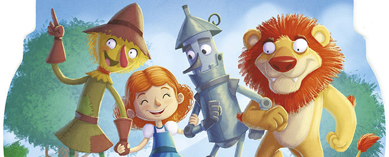

INTRODUCCIÓN
- Duración
- 4 SEMANAS
- Para
- 1º DE PRIMARIA
PROYECTO:
“EL MÁGICO VIAJE A OZ”

❖ Centro de interés: El proyecto se centra en el cuento “El
Mago de Oz”, utilizando su historia, personajes y
escenarios como hilo conductor para trabajar diferentes
contenidos curriculares de forma globalizada.
❖ Nivel: va dirigido a alumnado de 1o de Educación Primaria
(6-7 años).
❖ Temporalización: Duración de 1 mes aproximadamente (4
semanas), integrando actividades progresivas en las
distintas áreas y culminando en un producto final digital.
❖ Materias implicadas: Lengua, Matemáticas, Conocimiento
del Medio y Educación Plástica.
❖ Idioma: castellano, aunque cabe la posibilidad de trabajar
algunas palabras en inglés (colores, personajes...) de manera
puntual.
❖ Descripción general:
A través de la narrativa de El Mago de Oz, se pretende que
el alumnado:
● Desarrolle la comprensión lectora y la expresión oral y
escrita mediante el cuento.
● Trabaje contenidos matemáticos básicos como conteo,
operaciones simples y lógica.
● Conozca aspectos del entorno natural y social relacionados
con los temas del libro de Conocimiento (tiempo
atmosférico, cuerpo humano, entorno).
● Exprese su creatividad mediante actividades plásticas
(dibujo, construcción, collage).
● Desarrolle habilidades sociales y emocionales como la
cooperación, la empatía y la autoestima.
● Se inicie en el uso de herramientas digitales creando un
producto final colaborativo.
❖ Justificación del proyecto:
Este proyecto se basa en un enfoque globalizador,
especialmente adecuado para el primer ciclo de Primaria, donde
el aprendizaje se produce de forma más significativa cuando los
contenidos están conectados entre sí.
El uso de un cuento como El Mago de Oz resulta altamente
motivador para el alumnado, ya que introduce elementos
fantásticos, personajes cercanos y una estructura narrativa
clara que facilita la comprensión.
Además:
● Permite relacionar contenidos curriculares reales (libros
de Anaya) con una historia atractiva.
● Favorece el aprendizaje competencial, integrando
distintas áreas en tareas significativas.
● Promueve la participación activa del alumnado mediante
actividades manipulativas, creativas y digitales.
● Responde a la necesidad de introducir el uso educativo de
las TIC desde edades tempranas.
● Facilita la atención a la diversidad, al ofrecer múltiples
formas de expresión (oral, escrita, artística).
En conjunto, se trata de una propuesta que combina motivación,
aprendizaje significativo y desarrollo integral del alumnado.